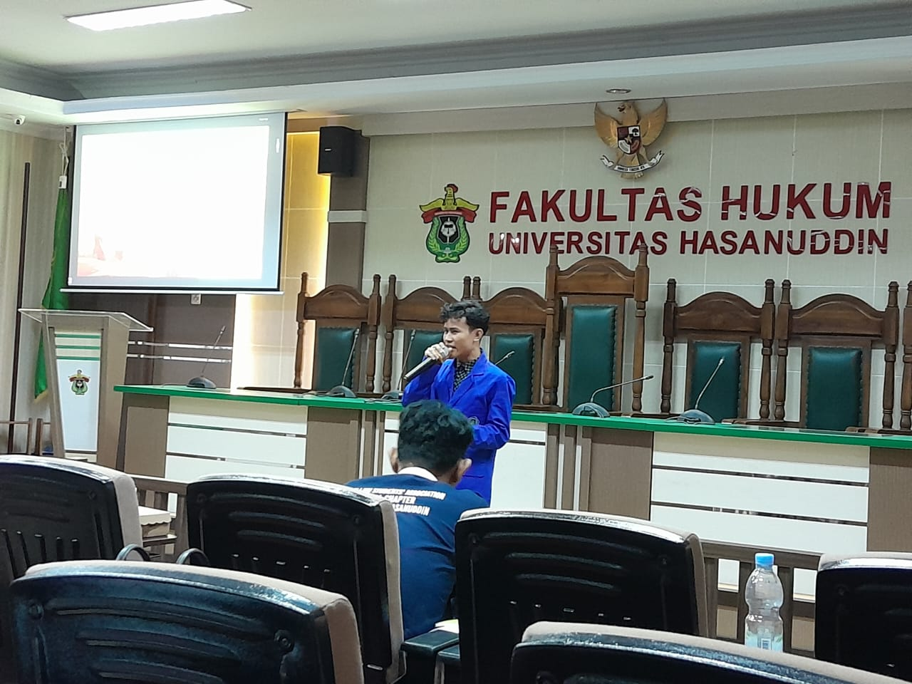
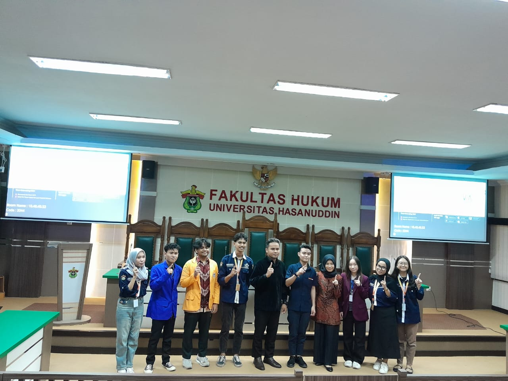

Makassar, 22 Oktober 2024 perwakilan mahasiswa dari Universitas Handayani Makassar berhasil menjadi juara 3 dalam kompetisi yang diadakan oleh ALSA (Asian Law Students Association) di Fakultas Hukum Universitas Hasanuddin pada kategori English Speech Competition Varsity Student yang bertema “Social Inequality in Voice, Work, and Safety in Poverty”. Lomba ini diikuti oleh lebih dari 112 sekolah dan kampus yang ada di berbagai wilayah di Sulawesi Selatan. Dalam sambutanya, ketua ALSA 2024 saudara Yuzril Ihza Mahendra Rastach mengatakan kegiatan ini bertujuan untuk mengekspresikan minat dan bakat dalam Bahasa Inggris pada siswa dan mahasiswa di seluruh sekolah dan universitas yang ada di Sulawesi Selatan, menurutnya dengan berkompetisi, siswa dan para mahasiswa juga bisa lebih memperkuat siaturahmi dan hubungan mereka sesama siswa dan mahasiswa yang ada di sulsel. Pesan dari saudara yusril adalah seluruh peserta bisa berkompetisi secara sehat dan fair demi kelancaran lomba yang berlangsung selama 3 hari, jumat 18 hingga senin 21 Oktober 2024.
Untuk lomba ini sendiri terbagi atas beberapa kategori, yaitu speech, news casting, storytelling, dan debate. Saudara Abid Zuhudi Syarief sendiri dari perwakilan satu satunya Universitas Handayani Makassar mengikuti kategori speech dan berhasil meraih juara 3 pada kategori tersebut. Dalam keterangan nya, abid sendiri tidak menyangka bisa sampai pada tahap ini apalagi sampai bisa menjadi juara, masuk top 5 saja saya sudah sangat bersyukur, hingga pada saat tahap pengumuman juara, saya sangat bersyukur bisa berada pada posisi tersebut. Tambah nya dalam keterangan, lawan yang dihadapi juga semua berasal dari kampus kampus terkenal yang memang sudah menjadi langganan juara dalam kompetisi bahasa inggris yang diadakan tiap tahun, alhamdulillah Handayani bisa menyumbang satu trofi pada kategori English speech varsity student. Tema pada saat final juga terbilang berat, karena kita dituntut untuk bisa memberikan idea dan kontribusi nyata dalam mengatasi permasalahan kemiskinan di generasi sandwich sebagai mahasiswa.

Harapan nya adalah semoga muncul banyak bibit bibit baru di kampus yang bisa meneruskan jejak saudara abid yang haus akan mengikuti lomba dan kompetisi, karena semakin banyak lomba yang diikuti semakin terkenal juga kampus kita di luar sana, jadi dalam mengikuti lomba sangat banyak manfaat yang bis akita ambil, baik untuk diri sendiri maupun kontribusi untuk kampus tercinta. ← Kembali ke Halaman Informasi